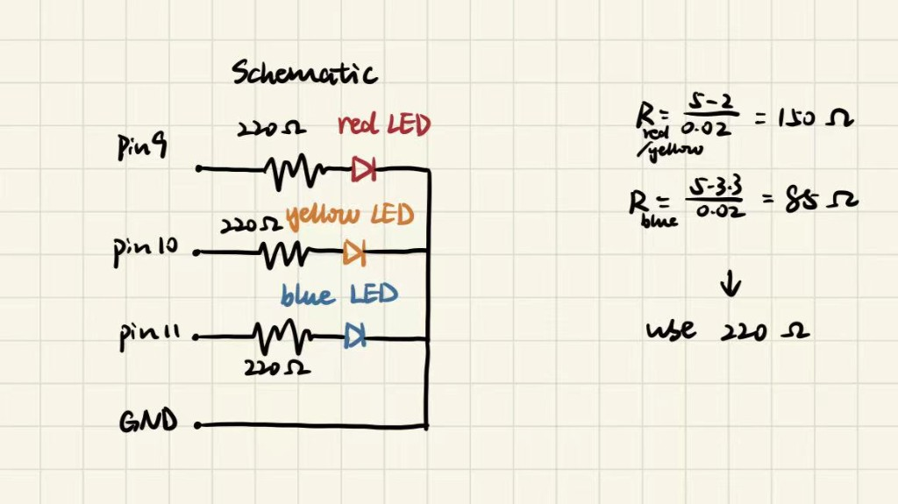
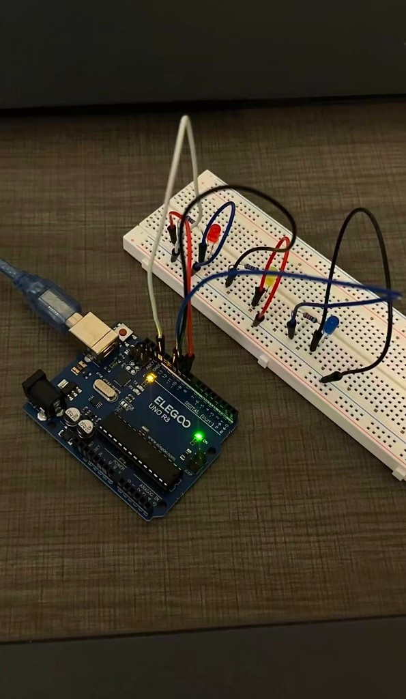
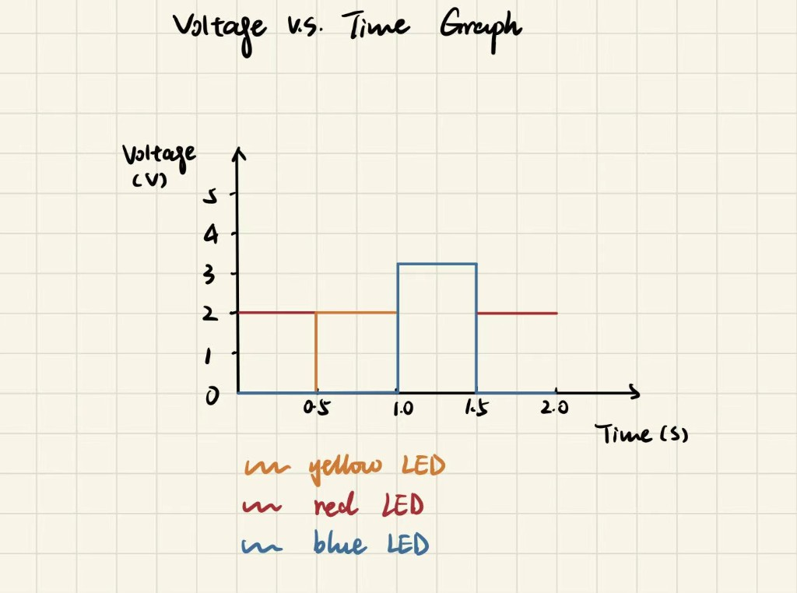

For this assignment, I made a blinking light pattern using three LEDs: red, yellow, and blue. I connected them to different pins on my Arduino so I could control each one separately. I wanted to make a simple chasing-light effect where the lights turn on one after another. Each LED stays on for half a second before switching to the next one.


I used digitalWrite() to turn each LED on and off and delay() to control how long each one stays on. I kept the code pretty simple so I could understand what was happening at each step.
// Define the pin to connect to the first LED.
const int led1 = 9;
// Define the pin to connect to the second LED.
const int led2 = 10;
// Define the pin to connect to the third LED.
const int led3 = 11;
// Set up the LED pins when the Arduino starts.
void setup() {
// Set the first LED pin as an output.
pinMode(led1, OUTPUT);
// Set the second LED pin as an output.
pinMode(led2, OUTPUT);
// Set the third LED pin as an output.
pinMode(led3, OUTPUT);
}
// Repeat the blinking pattern continuously.
void loop() {
// Turn on LED 1.
digitalWrite(led1, HIGH);
// Keep LED 1 on for 500 milliseconds.
delay(500);
// Turn off LED 1.
digitalWrite(led1, LOW);
// Turn on LED 2.
digitalWrite(led2, HIGH);
// Keep LED 2 on for 500 milliseconds.
delay(500);
// Turn off LED 2.
digitalWrite(led2, LOW);
// Turn on LED 3.
digitalWrite(led3, HIGH);
// Keep LED 3 on for 500 milliseconds.
delay(500);
// Turn off LED 3.
digitalWrite(led3, LOW);
// Keep all LEDs off for 500 milliseconds.
delay(500);
}
I drew this graph to better understand how the timing in my code relates to when each LED turns on and off. It helped me see the blinking pattern in a different way.
My Arduino Uno could theoretically blink up to 20 LEDs independently because it has 14 digital pins and 6 analog pins that can also be used as digital outputs.
Using Ohm's Law with my 220Ω resistors, each red or yellow LED draws about (5 − 2) / 220 = 13.6mA, and each blue LED draws about (5 − 3.3) / 220 = 7.7mA.
If I had 7 red LEDs on at the same time, they would draw about 7 × 13.6 = 95.2mA. I would use this as a conservative estimate for how many similar LEDs I could power directly, since the Arduino also has total current limits. In my actual blinking pattern, only one LED is on at a time, so the current is much lower.
I started with a 500ms delay, where I could clearly see each LED blinking one after another. Then I gradually shortened the delay to make the lights blink faster. At 10ms, the LEDs were flickering really quickly, but I could still notice the blinking. When I reduced the delay to 5ms, I could no longer tell that they were blinking, and the three LEDs almost looked like they were on at the same time.
Yes, I used ChatGPT to help me debug my Arduino code and revise the comments to make them clearer and easier to understand. I also used ChatGPT to review the written parts of my assignment, mainly to improve the wording and logical flow of my explanations. Additionally, I used ChatGPT to help format and organize the layout of my portfolio website.